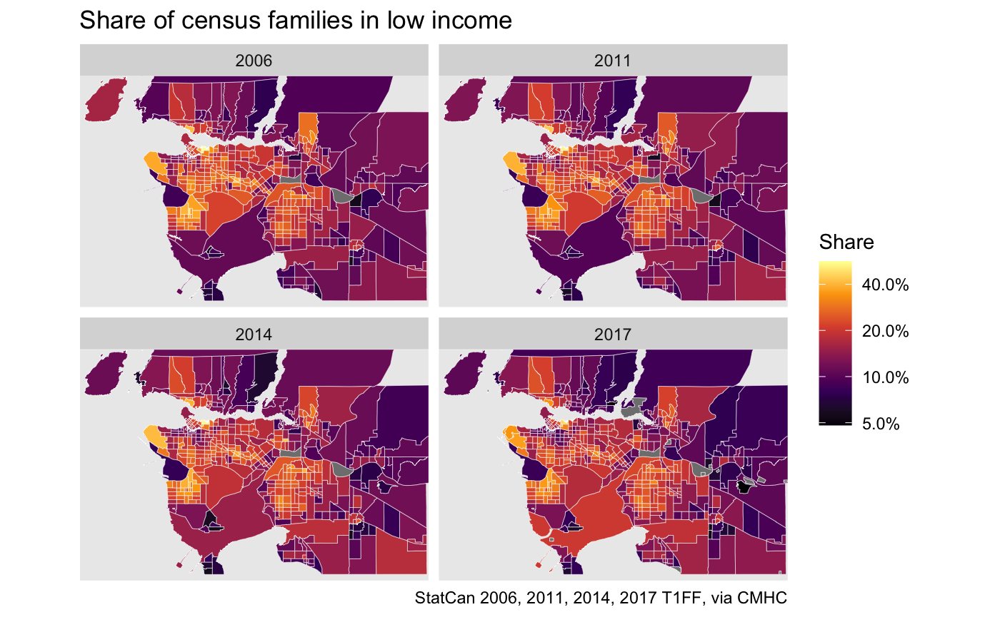
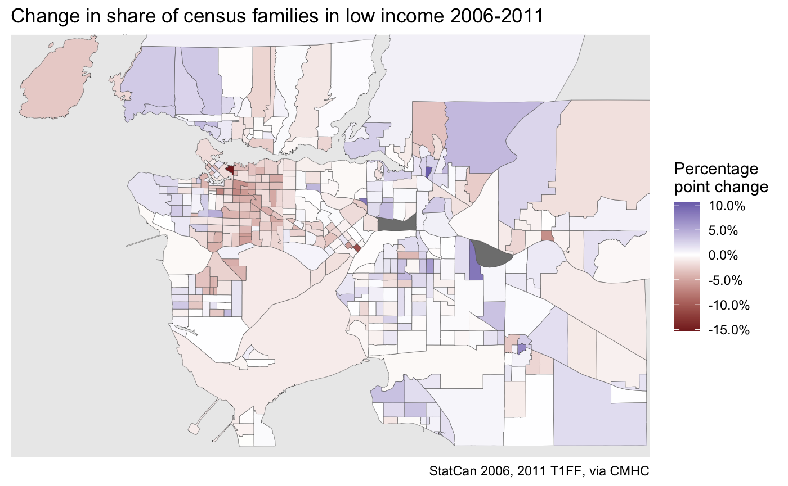

Additional datasets: Annual T1FF taxfiler data
Dataset background and example usage
Source:vignettes/Taxfiler_Data.Rmd
Taxfiler_Data.RmdBackground
Through collaboration with the Canadian Mortgage and Housing
Corporation (CMHC), CensusMapper has added and open-sourced annual
T1FF taxfiler data which provides an annual look at some basic
demographic variables. Data is available via the cancensus
package for the years 2001 through 2017. The T1FF dataset contains
information on:
- individual income
- government transfers
- family income
- family composition
- taxfilers by age groups
- taxfilers and dependents by age groups
- marital status and select other demographic variables
The data comes in varying Census geographies, depending on the year.
Retrieving any annual dataset via get_census will
automatically reference to the correct Census geography and attach the
correct spatial boundaries.
The taxfiler data is organized with consistent internal referencing. The identifier for the number of families in low income in 2017 is “v_TX2017_786” and that for all families is “v_TX2017_607”, and the ones for the other years are given by simply swapping out the year. This makes the variables selection process easy.
Example usage: constructing a multi-year series of families in low-income status
As an example we will explore a multi-year time series for families in low income. Data on low income families is available for years 2004 and later, we will start with 2006 just so that the data fits on a nice grid.
# Packages used for example
library(cancensus)
library(dplyr)
library(tidyr)
library(ggplot2)
library(sf)To see all available T1FF datasets and their reference codes we can
use list_census_datasets().
list_census_datasets() %>%
filter(grepl("taxfiler",description))
#> # A tibble: 19 × 6
#> dataset description geo_dataset attribution reference reference_url
#> <chr> <chr> <chr> <chr> <chr> <chr>
#> 1 TX2000 2000 T1FF taxfiler d… CA1996 StatCan 20… 72-212-X https://www1…
#> 2 TX2001 2001 T1FF taxfiler d… CA01 StatCan 20… 72-212-X https://www1…
#> 3 TX2002 2002 T1FF taxfiler d… CA01 StatCan 20… 72-212-X https://www1…
#> 4 TX2003 2003 T1FF taxfiler d… CA01 StatCan 20… 72-212-X https://www1…
#> 5 TX2004 2004 T1FF taxfiler d… CA01 StatCan 20… 72-212-X https://www1…
#> 6 TX2005 2005 T1FF taxfiler d… CA01 StatCan 20… 72-212-X https://www1…
#> 7 TX2006 2006 T1FF taxfiler d… CA06 StatCan 20… 72-212-X https://www1…
#> 8 TX2007 2007 T1FF taxfiler d… CA06 StatCan 20… 72-212-X https://www1…
#> 9 TX2008 2008 T1FF taxfiler d… CA06 StatCan 20… 72-212-X https://www1…
#> 10 TX2009 2009 T1FF taxfiler d… CA06 StatCan 20… 72-212-X https://www1…
#> 11 TX2010 2010 T1FF taxfiler d… CA06 StatCan 20… 72-212-X https://www1…
#> 12 TX2011 2011 T1FF taxfiler d… CA06 StatCan 20… 72-212-X https://www1…
#> 13 TX2012 2012 T1FF taxfiler d… CA11 StatCan 20… 72-212-X https://www1…
#> 14 TX2013 2013 T1FF taxfiler d… CA11 StatCan 20… 72-212-X https://www1…
#> 15 TX2014 2014 T1FF taxfiler d… CA11 StatCan 20… 72-212-X https://www1…
#> 16 TX2015 2015 T1FF taxfiler d… CA11 StatCan 20… 72-212-X https://www1…
#> 17 TX2016 2016 T1FF taxfiler d… CA16 StatCan 20… 72-212-X https://www1…
#> 18 TX2017 2017 T1FF taxfiler d… CA16 StatCan 20… 72-212-X https://www1…
#> 19 TX2018 2018 T1FF taxfiler d… CA16 StatCan 20… 72-212-X https://www1…And, as an example, available data vectors for one such T1FF dataset.
list_census_vectors('TX2017')
#> # A tibble: 818 × 7
#> vector type label units parent_vector aggregation details
#> <chr> <fct> <chr> <fct> <chr> <chr> <chr>
#> 1 v_TX2017_1 Total Taxfilers - # Number NA Additive Tax da…
#> 2 v_TX2017_3 Total % 0-24 Percenta… v_TX2017_1 Average of… Tax da…
#> 3 v_TX2017_4 Total % 25-44 Percenta… v_TX2017_1 Average of… Tax da…
#> 4 v_TX2017_5 Total % 45-64 Percenta… v_TX2017_1 Average of… Tax da…
#> 5 v_TX2017_6 Total % 65+ Percenta… v_TX2017_1 Average of… Tax da…
#> 6 v_TX2017_7 Total Average - Age Ratio v_TX2017_1 Average of… Tax da…
#> 7 v_TX2017_8 Total % female Percenta… v_TX2017_1 Average of… Tax da…
#> 8 v_TX2017_9 Total % married Percenta… v_TX2017_1 Average of… Tax da…
#> 9 v_TX2017_10 Total % in appt Percenta… v_TX2017_1 Average of… Tax da…
#> 10 v_TX2017_11 Total All persons - # Number NA Additive Tax da…
#> # ℹ 808 more rowsThis particular dataset has over 800 individual vectors. The vector
codes follow a regular pattern across different years, and we can use
this to quickly identify all the relevant variables of interest across
multiple datasets. We can utilized the CensusMapper
graphical variable selection interface, which can also be reached by
calling explore_census_vectors() from the R console. For
this example we are interested in low income families and note that the
internal CensusMapper vector for all families is of the form
*v_TX
While the geography varies across Census periods, the call to
get_census will automatically attach the correct geography
for each annual dataset. We pick four years to look at low income
families.
years <- c(2006,2011,2014,2018)
# Attribution for the dataset to be used in graphs
attribution <- dataset_attribution(paste0("TX",years))
plot_data <- years %>%
lapply(function(year) {
dataset <- paste0("TX",year)
vectors <- c("Families"=paste0("v_",dataset,"_607"),
"CFLIM-AT"=paste0("v_",dataset,"_786"))
get_census(dataset,regions=list(CMA="59933"),vectors = vectors,
geo_format = 'sf', level="CT", quiet = TRUE) %>%
select(c("GeoUID",names(vectors))) %>%
mutate(Year=year)
}) %>%
bind_rows() %>%
mutate(share=`CFLIM-AT`/Families)Here we also re-organized the data by year. All that’s left is to plot the data, one year at a time.
ggplot(plot_data,aes(fill=share)) +
geom_sf(size=0.1,color="white") +
facet_wrap("Year") +
scale_fill_viridis_c(labels=scales::percent,option = "inferno",
trans="log",breaks = c(0.05,0.1,0.2,0.4)) +
coord_sf(datum=NA,xlim=c(-123.4, -122.5), ylim=c(49.01, 49.4)) +
labs(title="Share of census families in low income",fill="Share",
caption=attribution)
We may be tempted to re-arrange the data to create timelines, but we have to be careful as census geographies change over time. Inspecting the dataset tables at the top informs us that the 2006 through 2011 data all come on the common 2006 census geography, so the 2006 and 2011 tax data are directly comparable.
change_data <- plot_data %>%
filter(Year==2006) %>%
select(GeoUID,`2006`=share) %>%
left_join(plot_data %>%
st_set_geometry(NULL) %>%
filter(Year==2011) %>%
select(GeoUID,`2011`=share),
by="GeoUID") %>%
mutate(change=`2011`-`2006`)
ggplot(change_data,aes(fill=change)) +
geom_sf(size=0.1) +
scale_fill_gradient2(labels=scales::percent) +
#scale_fill_viridis_c(labels=scales::percent,option = "inferno") +
coord_sf(datum=NA,xlim=c(-123.4, -122.5), ylim=c(49.01, 49.4)) +
labs(title="Change in share of census families in low income 2006-2011",fill="Percentage\npoint change",caption=dataset_attribution(paste0("TX",c(2006,2011))))
Analyzing change over longer timelines that span changes in Census geometries involves more work, the tongfen package facilitates this and provides a convenient interface for generating timelines spanning geometries from several Census years.